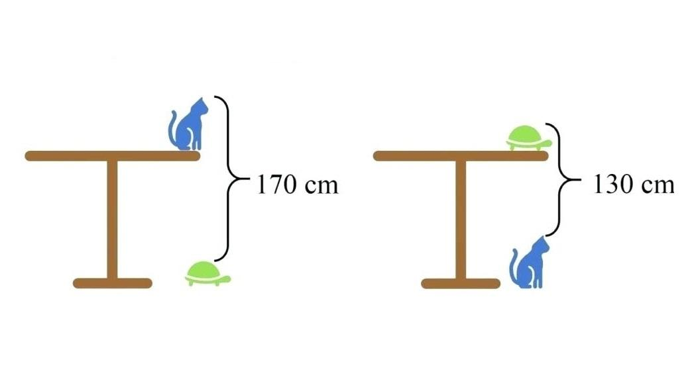

Una vez completado el crucigrama de colores, la puerta de la siguiente sala se desbloquea. Entras en ella y ves una mesa con una caja cerrada encima y una llave dentro. Encima de la mesa se lee un cartel: "Para abrir la caja, primero debes calcular la altura de la mesa".
La mesa parece bastante alta y no hay ninguna vara de medir que te ayude a calcular su altura. Entonces te das cuenta de que en la pared hay una ecuación matemática que te permitirá calcular la altura de la mesa.
